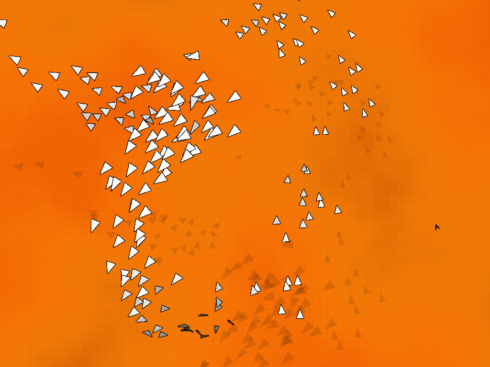
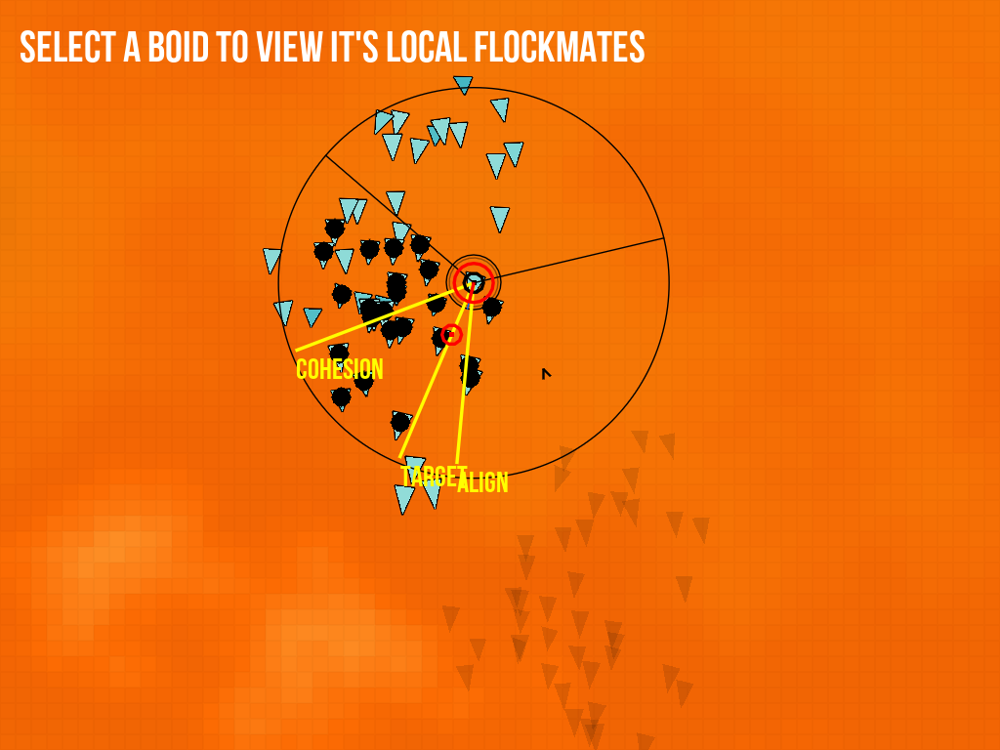
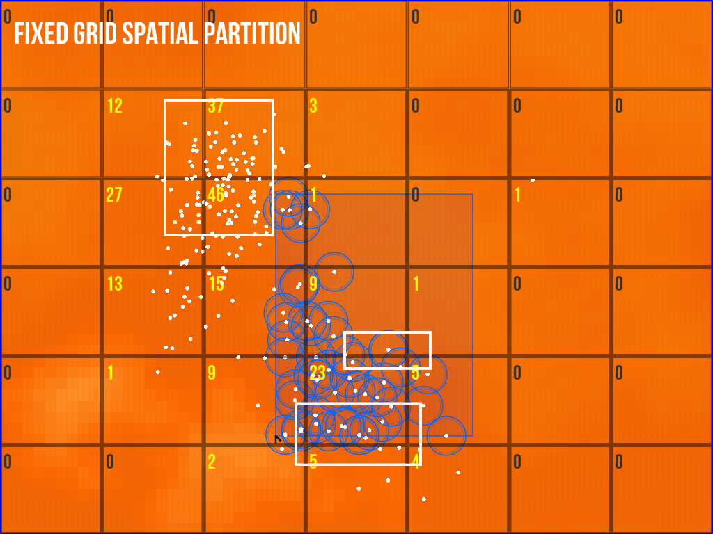
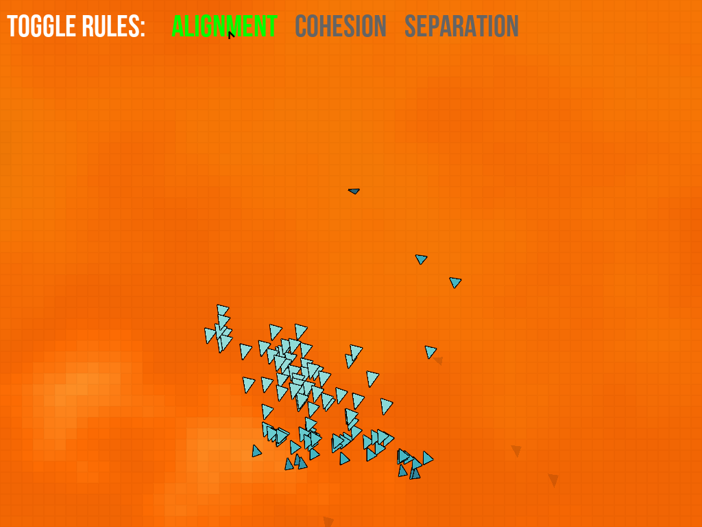
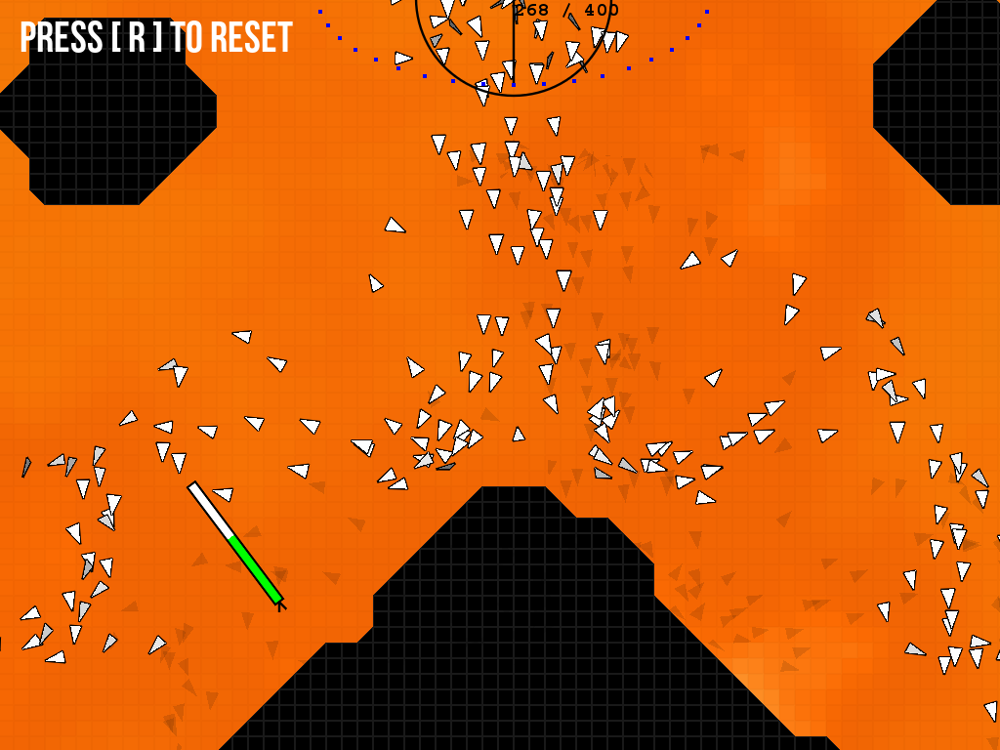
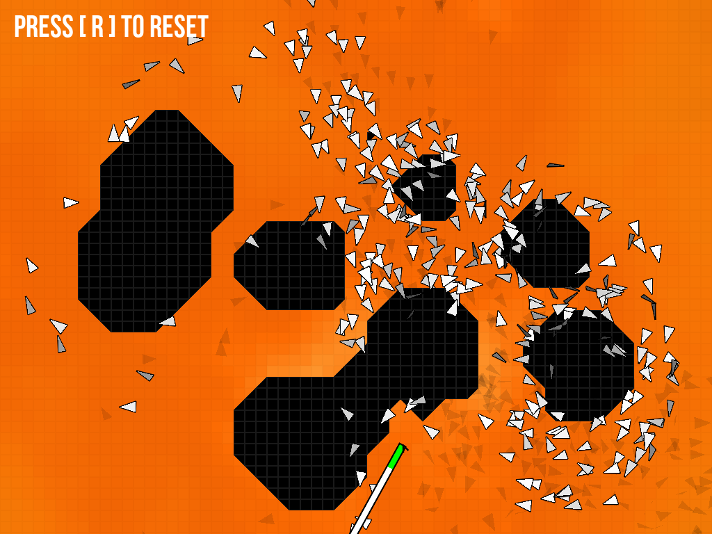
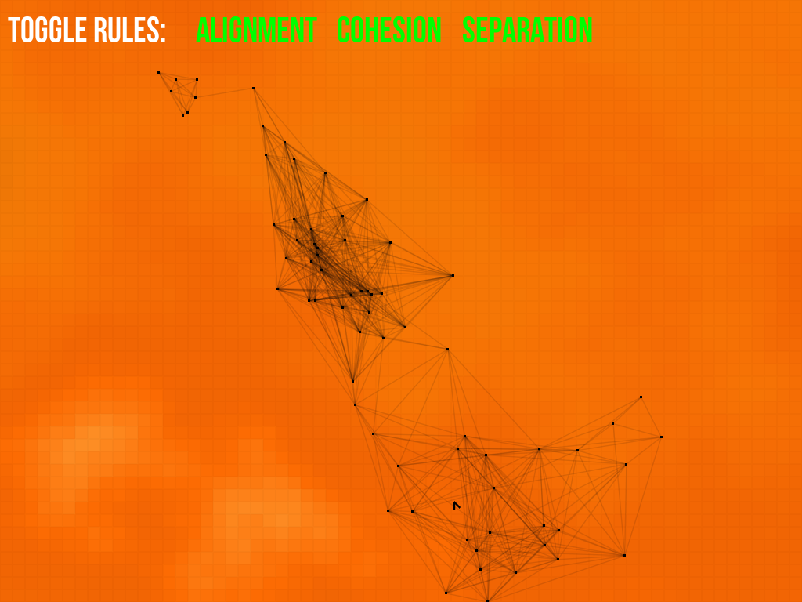
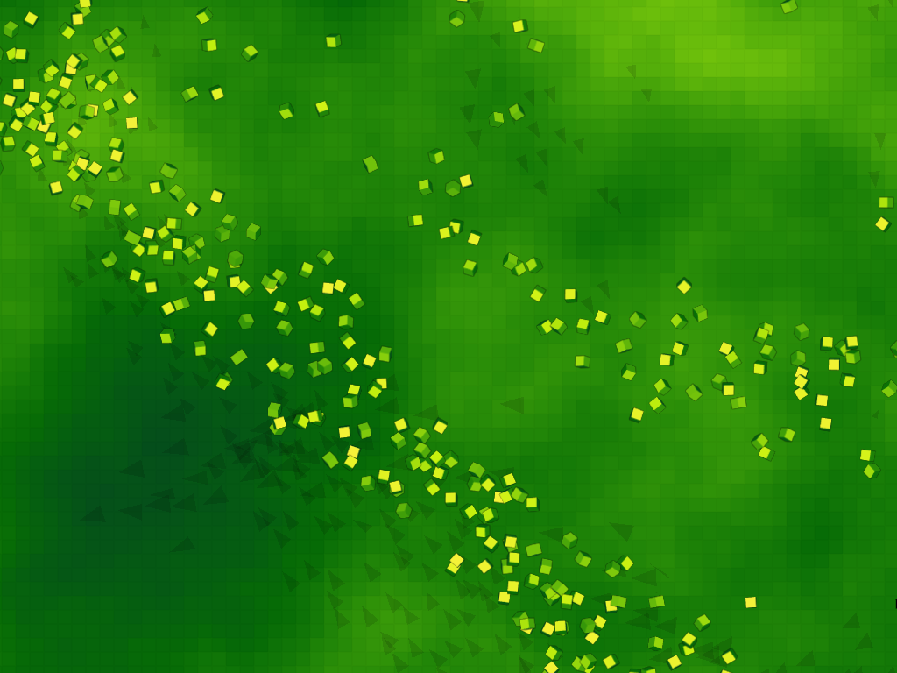

This program is an implementation of a boid flocking behaviour simulation.
Features include basic boid rules (alignment, cohesion, separation), obstacle
avoidance, and food sources.
The implementation is written in Lua and uses the LOVE framework
(http://love2d.org).
Video
The following video is an animation created from the program.
Screenshots
The following screenshots are from the Boids demo program. The program is set up
as a powerpoint style presentation interspersed with interactive demos.
Basic flocking behaviour

A boid's reaction to its local flockmates

Fixed grid spatial partition

Flocking rules

Obstacle avoidance with the aid of implicit field functions

Depleting food resources

Neighbour graph of a flock

Flocking cubes

Controls
Most of the controls are explained within the demo. Here are some extra controls:
- WASD or arrow keys - move camera
- Waypoints - Select boids with left mouse button, and right click to set a waypoint
- Camera tracking - select a boid to lock camera to that boid
- mouse scroll wheel - Change size of obstacles/food
- tilde key (~) - Display framerate
- F key - Display food resource debugging
- Escape key - Exit program
- Backspace key - Go to previous slide